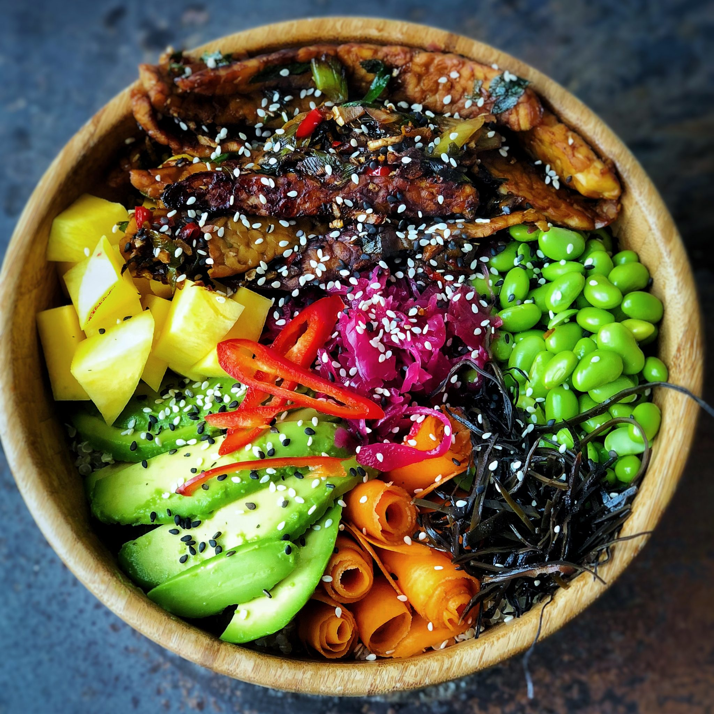

Healthy Poke Bowl

Description
A poke bowl originates from the caribbean and has become very popular in recent years with the rise of interest in bowl style food. It is wonderfully colourful and combines many textures and flavour profiles to bring a really delicious and healthy meal.
Ingredients
- 200g cooked brown rice or quinoa
- 70g tofu or mushroom
- 2tbsp of tamari
- 1 clove of garlic
- 35g frozen edamame beans
- 2 small carrots
- 1 lime
- 1 avocado
Instructions
- Cook rice or quinoa according to pack instructions or simply use a precooked pack from the supermarket.
- Boil the kettle and pour into a bowl to cover and thaw the frozen edamame/peas.
- Chop the tempeh/tofu or mushrooms into bite size pieces. Finely chop the garlic, scallions, ginger and chilli (removing the seeds from chilli before chopping if you prefer less heat).
- Heat a medium size non stick pan over high heat. Once hot add the garlic, ginger, chilli and scallion to the pan, reduce the heat to medium and cook for 3 minutes, stirring occasionally. Add the Tempeh/Tofu or mushrooms and cook for 3-4 minutes, add the tamari and cook for a further 1 minute until the tamari has completely reduced. Ensure to keep the tempeh/ tofu moving so that it cooks on all sides. Set aside.
- Carefully cut the avocado in half, remove the stone and scoop the avocado from the skin onto a board, slice to desired thickness.
- Add the lime juice, season to taste and serve with avocado and the grain of your choice. Lovely!